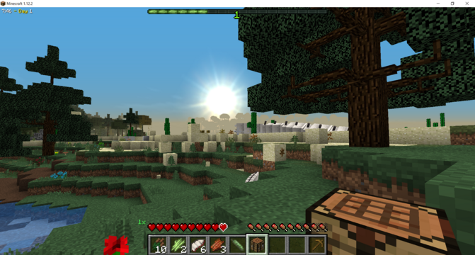

Minecraft First Night Survival Guide
By: Sofia
Introduction
Minecraft is a game that has captured the hearts of millions of players worldwide. With its endless possibilities and infinite creativity, it's no wonder that Minecraft has become one of the most popular games in the world. For newcomers, the first night in Minecraft can be especially daunting. Worry not - this Minecraft First Night Survival Guide has got you covered.
In this guide, we'll walk you through everything you need to know to survive your first night in Minecraft. From finding shelter and resources to fending off monsters, we'll cover all the basics so you can start your Minecraft adventure off on the right foot.
But why is survival on the first night so important? In Minecraft, the first night is the most dangerous. As soon as the sun sets, monsters begin to spawn and will attack you on sight. You'll be defenseless without any resources to aid you. That's why it's crucial to find shelter and gather resources before nightfall.
So, whether you're a seasoned Minecraft player looking for a fresh start or a new player just starting out, this guide is for you. Our tips and tricks will help you survive your first night in Minecraft and set you up for a successful adventure.
Remember, Minecraft is all about exploration and creativity, so don't be afraid to experiment and try new things. With this guide by your side, you'll be ready to tackle the challenges and mysteries that await you in the world of Minecraft. Happy surviving!
ad space
Gathering Resources
The key to surviving in Minecraft's first night is resource gathering. You'll need to collect wood, stone, and other materials to create tools, weapons, and shelters to protect you from the monsters that come out after dark.
The first task on your To-Do list is to punch down some trees to gather wood. Wood is the most essential resource in Minecraft as it is required to make almost everything you'll need to survive. Start by punching down the tree's trunk to get wood. Once you've collected a reasonable amount, head to the crafting table to turn it into planks. The wood planks will form the foundation of your first shelter.
The next essential resource to gather is stone. You'll need to dig down to find it because it's usually located underground. Once you've found a stone block, you can use your wooden pickaxe to mine it. Stone can be used to make stronger tools and weapons, which are essential for fending off monsters during the night.
Food is also essential to surviving. The first night can be difficult, as food sources are scarce. You'll need to scavenge for food by killing animals like sheep and pigs or finding edible plants like berries. Make sure to cook any food you find to avoid getting sick.
Additionally, you'll want to gather coal to make torches. This will help you see better at night and keep the monsters at bay. Coal can be found in caves and underground. To mine coal, use your pickaxe and right-click on the coal block.
Remember, the first night in Minecraft can be tough, but by gathering resources, creating tools, and building a shelter, you'll be better equipped to face the challenges ahead. Happy crafting!
ad space
Building a Shelter
When night falls in Minecraft, it’s time to build a shelter to protect yourself from hostile mobs. The first night in the game is the most critical, and it’s essential to have a reliable shelter to ensure your survival. Building a Shelter is your ultimate guide to building a secure habitat that will keep you safe from the dangers lurking in the dark.
First, you have to find a suitable location for your shelter. Look for a flat area with a lot of space and natural resources nearby. Gather wood, coal, and cobblestone to start building your structure. The material you choose determines how secure and durable the shelter will be. Wood is the easiest to gather and use, but it’s not as robust as cobblestone.
Next, you need to craft the necessary tools to build your shelter. You’ll need an axe to chop down trees, a pickaxe to collect stone and coal, and a shovel to dig dirt. Once you have these, start building the foundation of your shelter. This will consist of walls and a roof to keep you safe from the mobs prowling outside.
As you build your structure, make sure to keep an eye on your surroundings. Hostile mobs can spawn in the dark, so it’s crucial to light up your shelter with torches or other light sources. This will deter mobs from approaching your shelter, keeping it safe.
As the sun rises, you will be safe from hostile mobs, but it’s always better to be prepared. Explore the area around your shelter to gather more resources and build a more secure habitat. The Building a Shelter guide will take you through all the steps you need to build the perfect shelter and ensure your survival through the night.
ad space
Defending Yourself
When you first start playing Minecraft, the first night can be a daunting experience. Without proper preparation and knowledge, you can easily fall victim to the hostile mobs that roam the land once the sun sets. However, fear not! With this Minecraft First Night Survival Guide, you will learn everything you need to know to successfully defend yourself and survive your first night in the game.
Before the sun sets, you need to gather resources such as wood, stone, and coal. These will be essential in building tools, weapons, and shelter to help protect you from the dangers of the night. Once you have your resources, you need to craft a sword and pickaxe, and build a basic shelter to keep you safe from enemies.
As the sun sets, you will begin to hear the sounds of hostile mobs, including zombies, skeletons, and spiders. These creatures will spawn in the darkness and will be attracted to any source of light, so it’s crucial to keep your shelter well-lit with torches.
It’s also important to keep a watchful eye on your hunger and health bars. Your hunger bar will deplete over time, so be sure to have a steady supply of food like cooked meat or bread. Additionally, taking damage from enemies will reduce your health bar, so be prepared to heal yourself with food or a health potion.
But the best defense is a good offense! To ward off enemies, you should craft a bow and arrows to attack from a distance, and use your sword to fight up close. Be sure to keep backup weapons handy in case any break, and keep a stockpile of arrows to ensure you can continue to attack from a distance.
Finally, don’t forget about the importance of teamwork! Find a friend to play with and divide up your tasks to increase your chances of survival. And with these tips and tricks, you’ll be well on your way to surviving your first night in Minecraft!
ad space
Staying Calm and Focused
Surviving your first night in Minecraft can be a daunting task. You're alone, in the middle of nowhere, with nothing but your wits and a few basic tools. But fear not – with the right preparation and mindset, you can make it through the night unscathed, and set yourself up for a successful adventure in the world of Minecraft.
One of the most important things to remember when starting out in Minecraft is to stay calm and focused. It's easy to panic when the sun starts to set and the monsters begin to spawn, but keeping a level head is crucial if you want to survive. Take a deep breath, remind yourself that this is just a game, and stay focused on your goals.
To help you stay calm and focused, it's a good idea to have a plan before nightfall. Make sure you have a shelter ready – whether it's a basic dirt hut or a more elaborate structure made from wood or stone – and gather enough resources to last you through the night. You'll need tools, food, and enough torches to keep the monsters at bay.
It's also important to keep track of time. Minecraft follows a day-night cycle, with each day lasting 20 minutes in real time. Keep an eye on the clock – when the sun starts to set, it's time to find shelter. If you're caught out in the open when night falls, don't panic – try to find a high place to stand, like a tree or a hill, and keep an eye on your surroundings.
With the right mindset and a solid plan, surviving your first night in Minecraft is totally doable. So take a deep breath, gather your resources, and get ready for the adventure of a lifetime!
ad space
Conclusion
Congratulations on completing your first night in Minecraft! It's an achievement worth celebrating, and you should feel proud of yourself. In this conclusive guide, we hope you've gained some knowledge and confidence to make your future nights in Minecraft as successful as your first.
Now, we understand that this is just the beginning of your journey. As you delve deeper into the game, you'll encounter more challenging biomes, new mobs, and exciting adventures. However, remember that the key to survival is always preparation.
As you progress, explore, and experiment, keep in mind the lessons you've learned during your first night. Always prioritize building a shelter, prioritize resources, and keep an eye out for mobs. Remember, Axes and Swords are the best friends you can have in Minecraft.
But most importantly, have fun! Minecraft is a game where you can unleash your creativity, let your imagination run wild, and embark on endless adventures.
Before we wrap up, we'd like to remind you of some crucial tools that you can use to help your Minecraft journey. Minecraft Wiki is an excellent source of information for everything related to Minecraft. And if you're looking to explore, join servers with like-minded individuals, and participate in Minecraft communities, you can go to the Minecraft subreddit.
We hope you found this guide useful and enjoyable. Now get out there and continue your Minecraft journey! And don't forget to bring a bed with you next time.
ad space